التوجه الجمالي المعتمد: Premium Editorial Medical مع الامتثال الصارم لسياسات الإغلاق الطبي
جميع الشاشات المعروضة أدناه هي تصاميم بصرية ونماذج توضيحية. لم يتم تعديل أي سطر برمجي في التطبيق بانتظار الاعتماد النهائي الصريح.
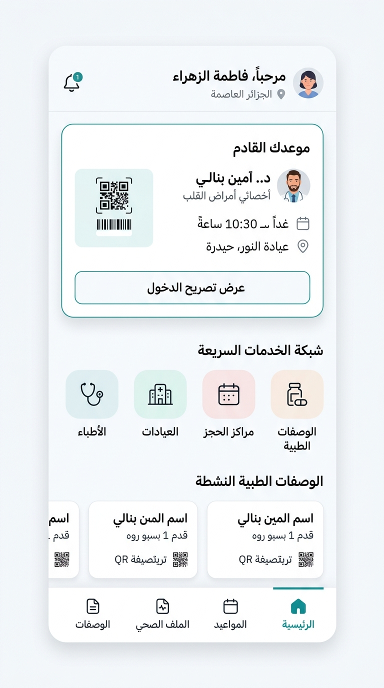
استبدال الهيدر الكحلي ببطاقة موعد قادم مضيئة ذات تباين ناعم، شبكة خدمات سريعة بأيقونات طبية متناسقة، وقائمة تذكيرات محلية.
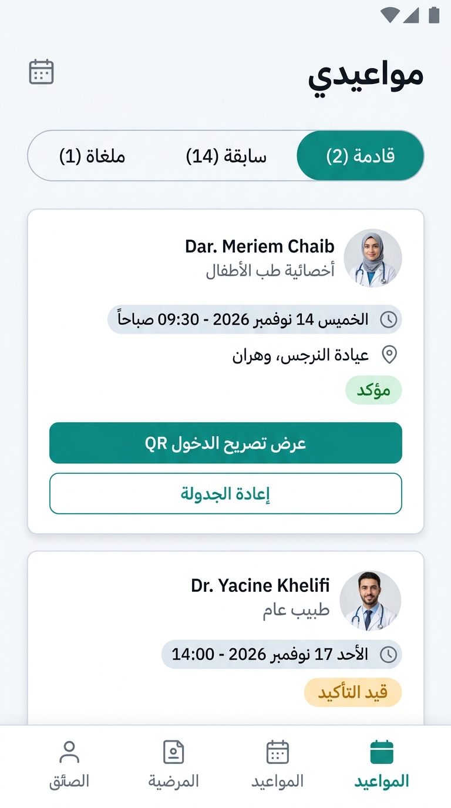
أزرار تبويب كبسولية عصرية، بطاقات بيضاء متباعدة ذات هوامش مدروسة، شارات حالة هادئة (مؤكد: 6.33:1 / معلق: 6.36:1).
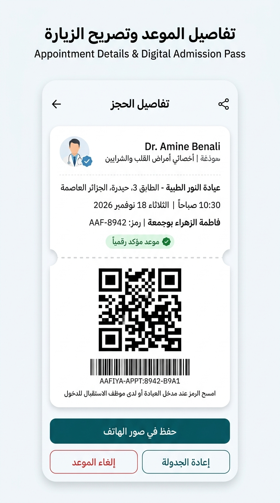
بطاقة صعود طبية بيضاء بنمط التذاكر العالمية مع خط فاصل تخريمي ناعم، ورمز QR تجريبي غير سريري يحافظ على بروتوكول AAFIYA-APPT.
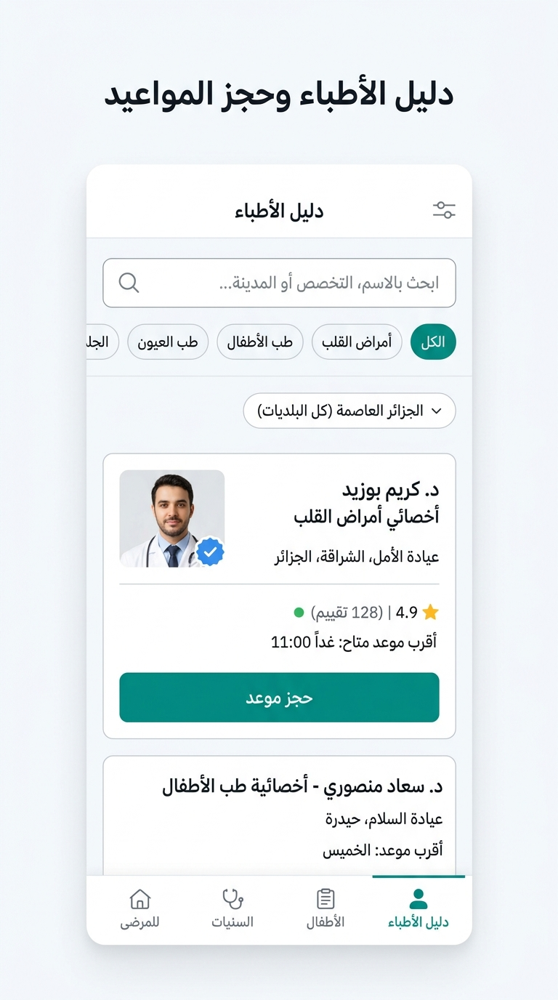
شريط بحث عالي الوضوح، رقاقات تخصص طبية بأهداف لمس 48dp، وبطاقات أطباء تعرض التخصص، سنوات الخبرة، وأقرب موعد متاح.
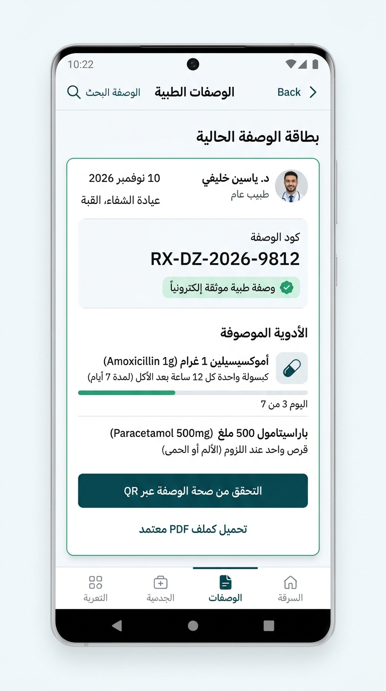
بطاقات جرعات يومية مع خانة تأكيد التناول، متوافقة تماماً مع قفل السجلات السريرية V1 (تذكيرات محلية بدون مزامنة طبية محظورة).
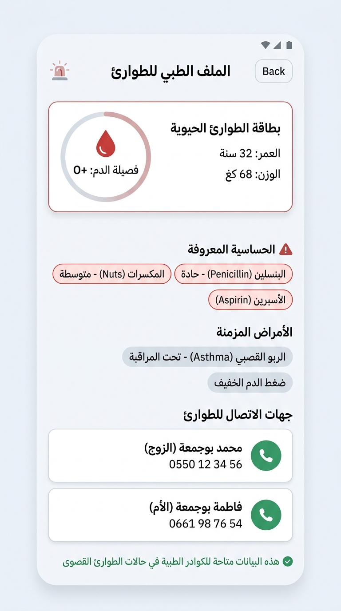
بطاقات اتصال مباشر للحماية المدنية (14) والشرطة (17) والدرك (1055) مع تنبيه سريري وإرشادات الإسعاف الأولي.
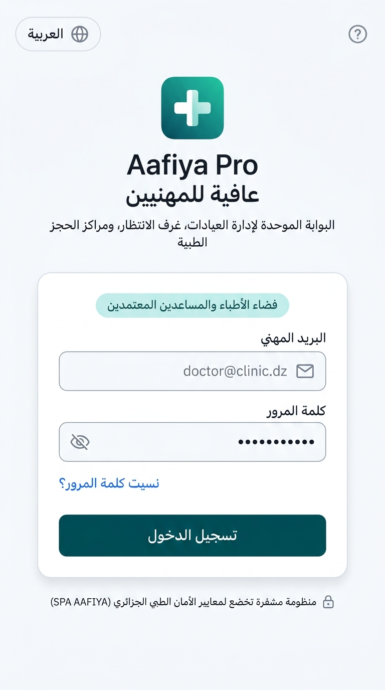
تصميم نخبوي يعكس الرصانة الطبية مع حقول إدخال واضحة، محدد اللغة (عربي / فرنسي / إنجليزي)، وزر دخول 52dp.
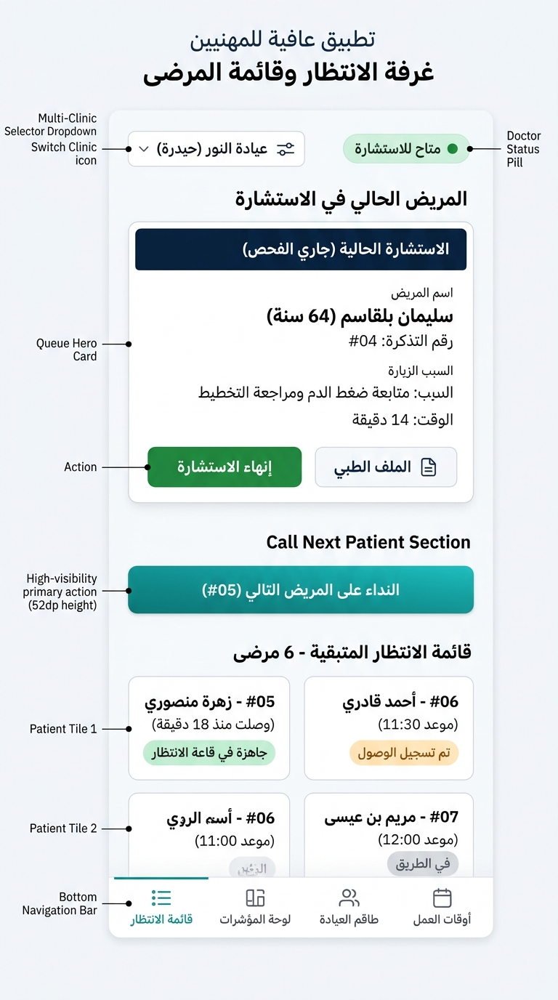
عرض المريض الحالي في الفحص مع توقيت الزيارة، وقائمة الانتظار مرتبة تسلسلياً مع إجراءات النداء السريع والإتمام.
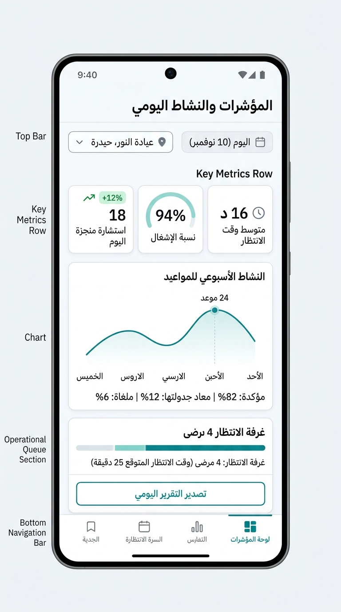
بطاقات ملخص ديناميكية للمواعيد، حضور العيادة، ومؤشرات الأداء السريري مع رسم بياني تدفقي هادئ.
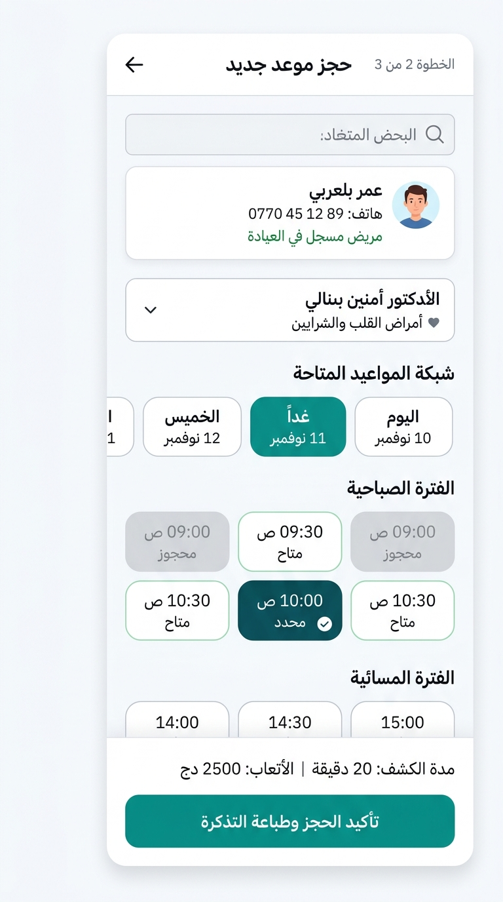
إدخال الاسم ورقم الهاتف، اختيار فترة الموعد وتأكيد الحجز الفوري مع خيار طباعة أو إرسال تذكرة الزيارة.
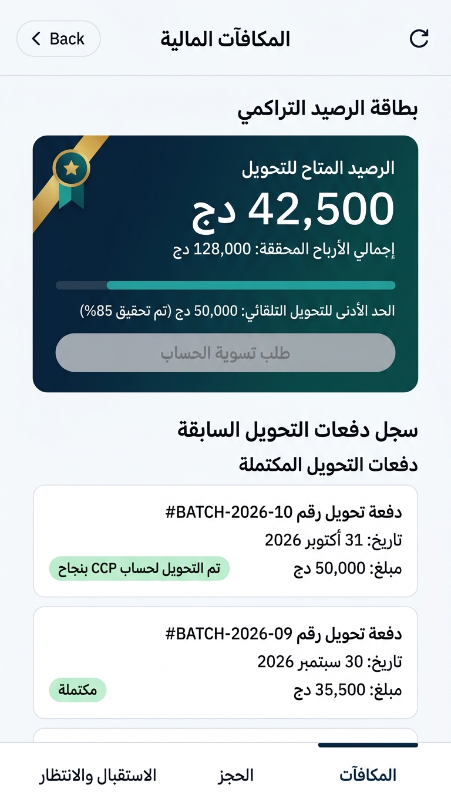
عرض الرصيد المستحق وسجل الدفعات بنظام FIFO، مع تمييز استحقاقات الحصص والديون المرحلة وفق منطق النظام المالي الحقيقي.
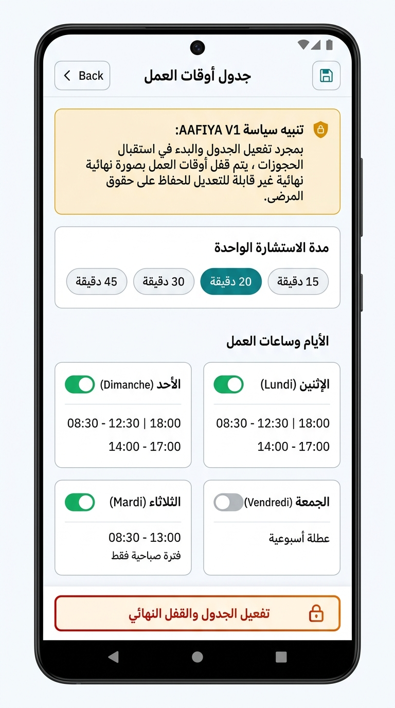
تحديد فترات الاستقبال، وأزرار تفعيل الأيام، مع بطاقة تحذيرية صريحة توضح أن اعتماد الدوام يترتب عليه قفل نهائي غير قابل للرجوع في V1.
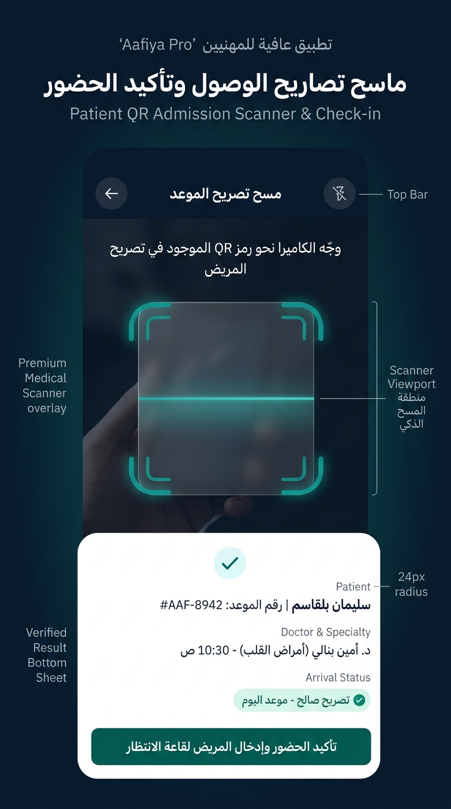
إطار تصويب الكاميرا مع شبكة محاذاة دقيقة، وزر تشغيل الفلاش، وتنبيه فوري لفك تشفير بروتوكول AAFIYA-APPT المشفر.